介紹 .NET Core 與 .NET Framework 與 ASP.NET Core的差別
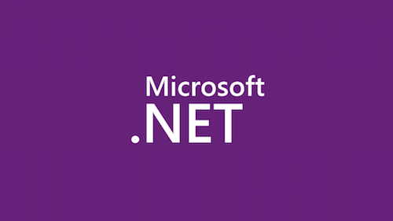
最近在推廣與學習 .NET Core 上最常遇到的幾個問題：
- .NET Core 與 .NET Framework 的差別？
- .NET Core 與 Mono 的差別？
- .NET Core 與 ASP.NET Core 的差別？
- 什麼是 .NET Standard?
- .NET Standard 與 .NET Core 的關係？
- 現在在用的 ASP.NET MVC5 & WebAPI2 跟 ASP.NET Core 的差別？
- C# 與 .NET Core 和 ASP.NET Core 的關係？
因為這個些問題是學習 .NET Core 的必要知識，所以就整理了一篇與大家分享．
先說明，以下內容大多都是整理已有資訊的重點，如果有興趣了解這些內容請點選 References 閱讀細節，並給予原作者肯定與鼓勵！
其中推薦兩篇：
.NET Overview
2014 年11月微軟新任 CEO Satya Nadella 決心下，釋出了的.NET原始碼包含了伺服器部份的核心，如.NET Framework Libraries、.NET Core Framework Libraries 和 RyuJit VM，以上都正式對外開放原始碼．其他包含 Visual Studio Code 也是完全開源的計畫！
更多 Microsoft Open Source Project 可以參考 Open Source at Microsoft
整個.NET 的開發我們可以從下面這兩張圖來看到這幾年到未來的一個趨勢：
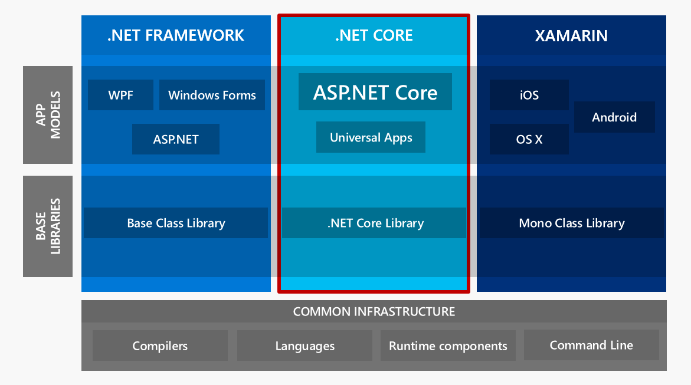
上面這張是目前整個 .NET 生態的分類．可以簡單地看到微軟在三個領域()由不同的底層 Framework 所支援，這樣的好處是我們對應特定領域/用途的開發可以透過這些分開的 Framework 達到 Cross-platform．但這三個領域本身並不是共用同一個底層 Framework ，這導致在 ASP.NET MVC 上用的套件，ASP.NET Core MVC 上可能不能用．
為了讓 Cross-solution 的專案能沿用既有的這些第三方套件(Packages)達到一個底層 Framework 即可 Cross-platform 與 Cross-solution 的目標， .NET Standard 就這樣誕生了．

上面這張是未來整個 .NET 生態的分類．
可以很明顯地看到，微軟在未來想透過 .NET Standard 做到完整的 Cross-platform 與 Cross-solution．
而當我們加入了開發工具來看整個微軟針對開發的佈局就如下圖：
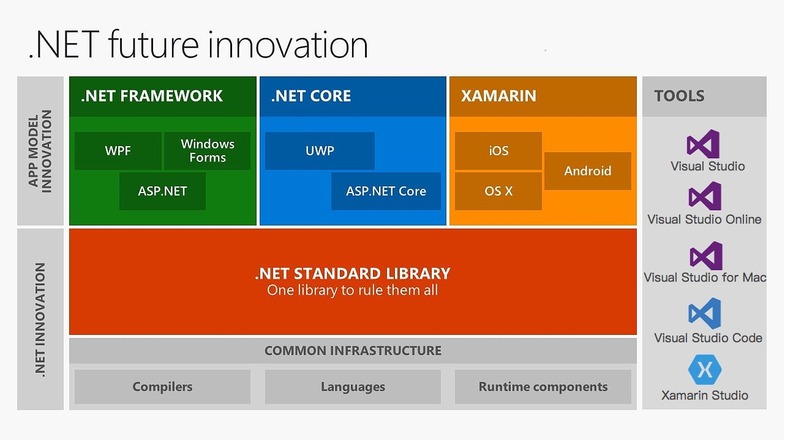
從右邊的開發工具我們可以看到除了傳統號稱地表最強IDE的 Visual Studio 外， Visual Studio 其實還有一個線上版本的整合開發環境(IDE) Visual Studio Online 讓我們可以不用安裝任何東西，透過瀏覽器即可開始開發，而這邊要稍微注意的是 Visual Studio Online 以功能與定位來看，它其實是線上版的 Team Foundation Service．線上編輯只是輔助的功能．而Visual Studio Online 已於 2015/11 月改名為 Visual Studio Team Services – VSTS．
而從 2016 開始微軟也公開 macOS 版本的 Visual Studio for mac，目前雖然還在 preview 中，但會在 2017 年上市．
另外，這幾年成長速度最快廣受各社群與開發者歡迎的免費且跨平台開源編輯器 Visual Studio Code，不同於 Visual Studio 定位為 IDE，Visual Studio Code 定位為編輯器，但透過其開源與強大的社群功能，在各種不同套件的整合下，漸漸的可變成各語言的輕量IDE．
.NET Framework
.NET Framework 有兩個主要的元件 ：Common Language Runtime 和 .NET Framework類別庫 。
- Common Language Runtime則是.NET Framework的基礎，可視為程式執行期間管理程式碼的代理程式，提供記憶體的管理、執行緒的執行、程式碼的執行、程式碼安全驗證及編譯等服務。
- Microsoft .NET Framework類別庫是作業系統層級的物件導向類別庫，與Common Language Runtime緊密整合，可供程式語言呼叫。所有支援.NET的程式語言都可以使用.NET Framework類別庫，減少學習新語言的時間。
最為人詬病的兩點：只能跑在 Ｗindows 平台與各版本的套件不一定相容，後著問題在 .NET Framework 4.0 開始已經逐漸達到向前相容了 (相容 2.0 到 當前下載的版本，但不包括 1.1 版本)．
這邊我們可以參考 Wiki 整理好的各版本 .NET Framework 的重點功能：

而這邊要提醒一下 C# 版本與 .NET Framework 版本不一定要一致，但.NET Framework 版本會限制能使用的 C# 版本．
對於這些版本的關係可參考 釐清 CLR、.NET、C#、Visual Studio、ASP.NET 各版本之間的關係
Mono
Mono 是一個目前由 Xamarin 公司 所主導的開放原始碼專案，該專案的目標是建立一系列符合ECMA標準的.NET工具．Mono專案不僅可以執行於Windows系統上，還可以執行於Linux，FreeBSD，Unix，OS X和Solaris，甚至一些遊戲平台，例如：Playstation 3，Wii或XBox 360．
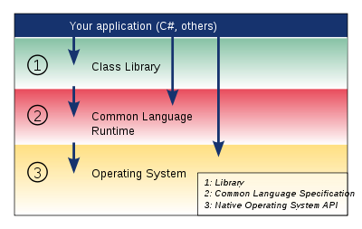
Mono程式的執行包含一個程式碼運作引擎，它會將ECMA CIL的byte code轉譯為原生碼（Native Code），它支援了以下處理器：ARM, MIPS（只有32位元模式）, SPARC, PowerPC, S390（64位元模式）, x86, x86-64以及IA-64 64位元模式。
程式的轉譯有三種模式：
Just-in-time (JIT)編譯
在程式執行當中將ECMA CIL的byte code轉譯為原生碼。
Ahead-of-Time (AOT)編譯：
ECMA CIL的byte code（通常在.exe檔或.dll檔中）會轉譯出原生碼並儲存在作業系統中、以及CPU架構設定檔（例如在Linux上，如果是foo.exe，就會產生foo.exe.so檔）。通常，此種模式可產生出絕大部份前種模式所產生的原生碼，部份的例外是trampolines或是控管監督相關的碼（仍舊需要JIT來執行），由此可知AOT影像檔並非可以完全獨立執行的。
完全靜態編譯：
這個模式只支援少數平台，它基於AOT編譯模式上，更進一步產生所有的trampoline、wrappers以及proxies，這幾樣東西是用於靜態連結出靜態檔案時所需。完全靜態編譯模式可以讓程式的執行期完全不需要用到JIT，這個做法適用於Apple iOS作業系統、Sony PlayStation 3以及微軟的XBox 360等作業系統。
這邊可以看到在目前與早先推廣的框架裡面 Xamarin 還是使用 Mono 作為開發的底層 API :
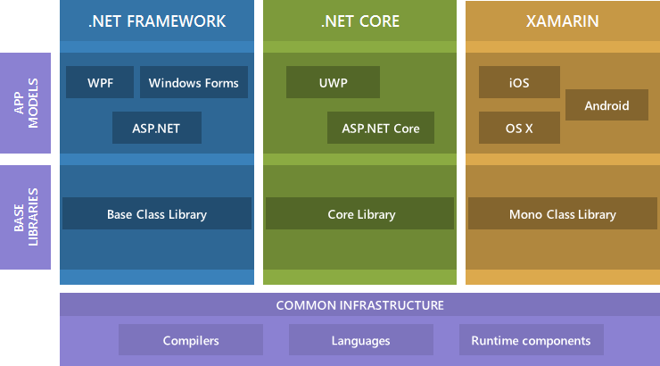
而 Mono 目前也是 .NET Foundation 下的其中一個開源計畫，看來應該還可以繼續保持下去．
.NET Core
.NET Core 是.NET Framework的新一代版本，是微軟官方開發的第一個跨平台 (Windows、Mac OSX、Linux) 的應用程式開發框架（Application Framework）有著下列的特性：
- Cross-platform
- Unified
- Fast
- Lightweight
- Modern
- Open Source
而目前的版本為 .NET Core 1.1.1，近期更新計畫：
| Milestone | Release Date |
|---|---|
| .NET Core 2.0 Preview | Q2 2017 |
| .NET Core 2.0 | Q3 2017 |
.NET Core 1.0 支援的作業系統環境：
| OS | Version | Architectures | Configurations | Notes |
|---|---|---|---|---|
| Windows Client | 7 SP1 - 10 | x64, x86 | ||
| Windows Server | 2008 R2 SP1 - 2016 | x64, x86 | Full, Server Core, Nano (2016 only) | |
| Red Hat Enterprise Linux | 7.2 | x64 | ||
| Debian | 8.2 | x64 | ||
| Ubuntu | 14.04 LTS, 16.04 LTS | x64 | ||
| Linux Mint | 17 | x64 | ||
| Centos | 7.1 | x64 | ||
| Oracle Linux | 7.1 | x64 | ||
| Mac OS X | 10.11, 10.12 | x64 | 10.12 added in 1.0.2 |
.NET Core 2.0 支援的作業系統環境：
| OS | Version | Architectures | Configurations | Notes |
|---|---|---|---|---|
| Windows Client | 7 SP1+ | x64, x86 | ||
| Windows Server | 2008 R2 SP1+ | x64, x86 | Full, Server Core, Nano | |
| Red Hat Enterprise Linux | 7.3+ | x64 | This includes Centos and Oracle Linux | |
| Fedora | 25+ | x64 | ||
| Debian | 8.7+ | x64 | ||
| Ubuntu | 14.04+ | x64, arm32 [C] | This includes Linux Mint 17 for x64 | |
| openSUSE | 42.2+ | x64 | ||
| Tizen | 4+ | arm32 [S] | Tizen .NET Developer Preview | |
| Mac OS X | 10.12+ | x64 |
- [S] This is supported by Samsung.
- [C] This is supported by the Community
.NET Standard
.NET Standard 是.NET 的新一代版本，是微軟開發的第一個跨平台 (Windows、Mac OSX、Linux) 並且跨應用程式開發框架（Application Framework）的底層API．.NET Standard 是重新了規範一套標準基礎程式庫 API 介面，未來可以在上面開發 ASP.NET, ASP.NET Core, Xamarin 等應用程式．
過去針對跨平台共用程式庫的主推做法是PCL（Portable Class Library），取出各平台不同 API 的交集(Intersection)，並透過適度的篩選保留對彼此平台都支援的 API．這樣的做法可以讓但開發者 無痛 (不需知道不同平台的差異來呼叫或是發佈對應版本)。
而 .NET Standard 目的在提供微軟在解決方案的底層 API 可依此介面實作出一致的程式庫，如此程式碼不需修改即可針對不同平台編譯、執行，達到真正的 Ｗrite one, Run everywhere 。.Net Standard 的製做想法跟 PCL 不同．.Net Standard 先規範出了一些 API intersection 內容，把不同的 intersection 定義出不同的版本編號，然後再看每個 platform 能支援到什麼版本．
當前的 .NET Standard 還在 1.6 版本，而預計 2017 的 Q3 會有一個更完整的 .NET Standard 2 的版本，該版本整合了目前微軟所有主流的底層 API ．換句話說，或許從這版開始以後就只需要知道 .NET Standard 即可了．官方支援參考或是Github - .NET Standard Versions．

而.NET Standard 2 則是有下面的既定目標:

補上與 .NET Core 的更新發佈時間：
| Milestone | Release Date |
|---|---|
| .NET Core 2.0 Preview | Q2 2017 |
| .NET Standard 2.0 Preview | Q2 2017 |
| .NET Core 2.0 | Q3 2017 |
| .NET Standard 2.0 | Q3 2017 |
ASP.NET Web Implementation Overview
大致上我們可以將 ASP.NET 於 Web 開發的應用(不以效能來看)以下圖來解釋：
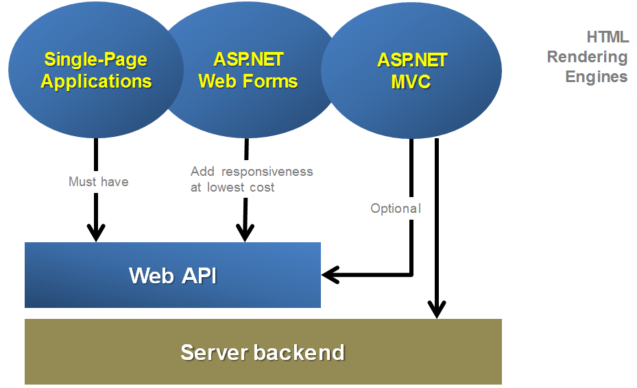
ASP.NET Web Form and ASP.NET MVC Different
ASP.NET Web Form 是微軟早期主打的 Web 應用程式服務框架，這也是很多人不懂 ASP.NET 的人所大多停留的映像：ASP.NET 的 Web Form 只要拖拉就可以完成頁面開發．
而在 ASP.NET MVC 框架推出後，我強烈建議不要在使用 Web Form 框架，因為不合宜的請求生命週期以及太好用的 toolkit 都導致整個效能只有 慢 跟 很慢 的差別，基本上我找不到繼續用 Web Form的任何理由，所以我也不打算介紹了．撇開效能跟不一樣的請求處理流程，直接看應用的時機與差別：
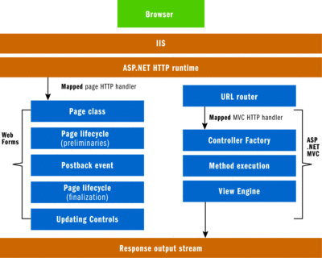
這邊補上與 ASP.NET Core 的應用差別：

ASP.NET MVC 5 and ASP.NET WebAPI 2 Different
嚴格說起來 MVC 與 WebAPI 理論上是兩個不同需求取向的專案，但有鑒於使用上常常被混淆或被視為同樣的東西(有時候連官方文件也會偷懶把兩個放一起)，所以慢慢的被視為是一體的．
但我們可以把 WebAPI 的專案是為沒有呈現需求的網路服務應用程式, 而因為他本身只有單純的處理 HTTP 請求，所以管線事件(pipeline)處理上都比 MVC 還要再簡化，所以有更好的效能．如果今天是單純提供資料服務的應用程式我會強烈推薦使用 WebAPI 專案而非 MVC 專案．
請求生命週期(request life cycle)比較:

Q&A
Q: .NET Core 與 .NET Framework 的差別
兩者都是 微軟官方 推出的應用程式介面（API）類別庫，可提供開發者基於已提供的 API 作延伸開發．
.NET Framework 只能跑在 Windows 的執行環境，.NET Core 可以跑在 跨平台的執行環境 : 包含 Windows, macOS 與 Linux 環境．
.NET Core 和 .NET Framework 是子集 (Subset) 與超集 (Superset) 的關係，.NET Core 將會實作出部份的 .NET Framework 功能。未來 .NET Framework 和 .NET Core 也將會是各自發展，但它們也會同時使用彼此的功能，例如 .NET Compiler Platform 與 RyuJIT 等技術。
Q: .NET Core 與 Mono 的差別？###
Mono 是一個已發展許久的 .NET Framework 跨平台開源版本，由社群所維護並成立自成一個生態系統，像Xamarin這樣的跨平台.NET行動應用就是從 Ｍono 計畫開始發展出來的．
.NET Core 是.NET Framework的新一代版本，是微軟官方開發的第一個跨平台 (Windows、Mac OSX、Linux) 的應用程式開發框架（Application Framework）
目前微軟官方表示： .NET Core 與 Mono 未來會是合作的關係，Mono 仍會維持社群力量的維護與發展，而 .NET Core 則會以官方角度來進行發展．
Q: .NET Core 與 ASP.NET Core 的關係？###
最早在微軟內部 ASP.NET Core 與 .NET Core 是完全沒有關係的兩個專案．ASP.NET Core 的初期(名稱還為ASP.NET 5時)由於 .NET Core 那時計畫還沒開始執行，所以擁有別於 .NET Core 的獨立執行的 Runtime與工具，該工具與環境稱為 Project K, 前陣子會看到很多 DNX (.NET Execution Environment) 也是他的名稱沒錯．但後來在 整
合後的版本將在 1.0 RC2 時釋出的 ASP.NET Core 就已經徹底改用 .NET Core 的 Runtime 與工具，原先的 DNX 計畫則終止了．
而目前來看 ASP.NET Core 是一個開源且跨平台的 framework ，主要是用來建立 Web 應用程式, API 服務, IoT 服務與 手機後台服務等以網路應用為主的應用程式．我們可以選擇要使用 .NET Core 或是 .NET Standard 作為跨平台的底層 API．
使用上要特別注意，目前 .NET Core Runtime 最新版本為 1.1.1 ，而 .NET Standard 當前的 1.6 版本僅整合到 .NET Core Runtime 1.0.0 ．
Q: .NET Standard 與 .NET Core 的關係？###
.NET Standard 未來會整合 .NET Core 最新版本並逐漸取代各項原有的底層 API (包括.NET Framework, .NET Core 與 Xamarin)，如果有跨解決方案的共用類別庫開發，建議在 .NET Standard 2 推出時看一下是否符合需求．
Q: 現在在用的 ASP.NET MVC5 & WebAPI2 跟 ASP.NET Core 的差別？###
ASP.NET MVC5 與 WebAPI2 甚至是 ASP.NET Web Form 等專案目前都是跑在 .NET Framework 上面的應用程式框架，而 ASP.NET Core 則是跑在 .NET Core 或 .NET Standard 的框架．
在 ASP.NET Core 上有 mvc 與 webapi 專案來對應 ASP.NET MVC5 與 WebAPI2 這兩個框架應用，因為兩著框架使用上非常雷同，幾乎可以無痛從 .NET Framework 轉移至 .NET Core，但相依的套件可能就要看是否支援 .NET Core 或是 .NET Standard ．
而由於 .NET Core 跨平台的特性，在使用 Container 作為開發與部屬環境時即可不用限制地跑任何一個 Windows 或 macOS 甚至 Linux 的環境，也方便我們部署到任何一個雲端供應商，如：AWS 與 Google Cloud Platform．
另外 ASP.NET Core 有著超高的效能，每秒能處理115萬個請求，是ASP.NET with .NET Framework 4.6 的 23 倍之多，有興趣的可以參考 ASP.NET Core – 2300% More Requests Served Per Second
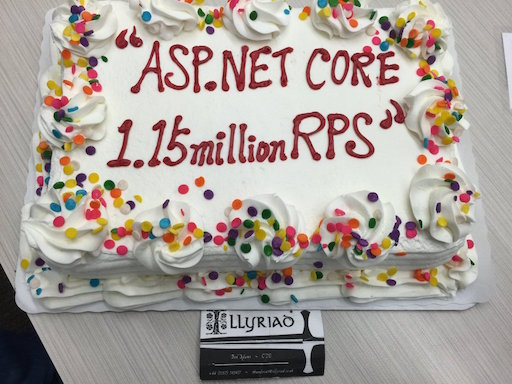
對於 web 框架評比有興趣的朋友可以參考https://www.techempower.com/benchmarks/
對於 ASP.NET Core 與 Google Cloud Platform 整合部署有興趣的朋友可以參考 Google Cloud Platform 系列文章．
Q: C# 與 .NET Core 和 ASP.NET Core 的關係？###
C# 目前是 .NET Core 與 ASP.NET Core 的預設開發語言，而除了 C# 外目前還能使用 F# 作為開發語言．而如果還在使用 VB.NET 開發的朋友可能不用指望 .NET Core 或是 ASP.NET Core 會支援了(雖然不知道為什麼官方一直大聲的說會支援，但已經一年多都沒看到更新的下文或回應)．
Survey and Trendy
從前幾天公佈的 stackoverflow : Developer Survey Results 2017 也可以看到 C#, ASP.NET Core 與 VSCode 的成長與市佔率其實不小，甚至帶來不少的話題，而滿意度很高一直以來都是這些 .NET 工具與套件的特性，而開源與徹底跨平台的策略更是明顯地帶來更多人的接納．
Programming Languages :
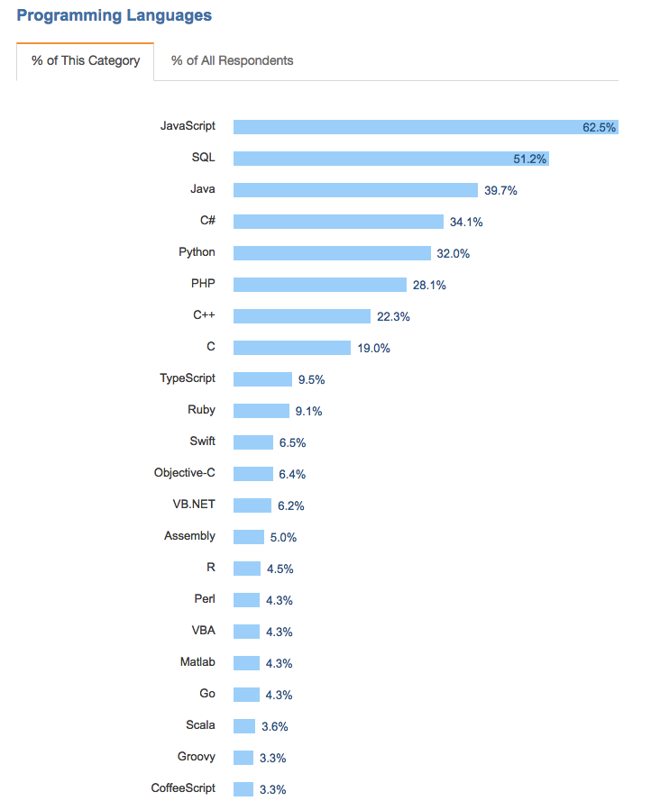
Most Popular Frameworks, Libraries, and Other Technologies:
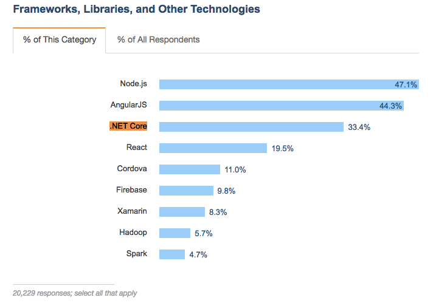
Most Loved, Dreaded, and Wanted Frameworks, Libraries and Other Technologies:
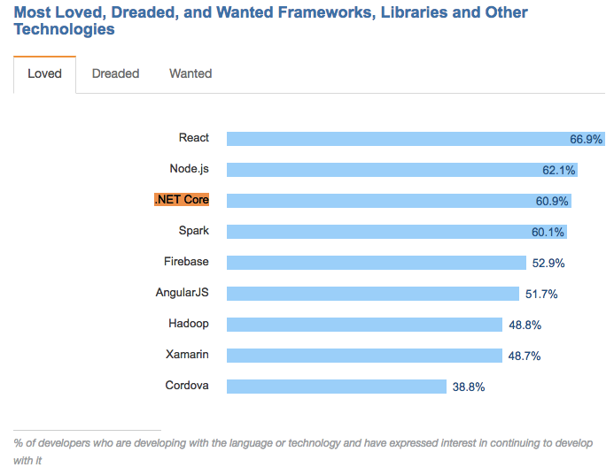
Most Popular Developer Environments by Occupation :


好了，看完這麼多是不是覺得 .NET Core 與 ASP.NET Core 帶給我們很多新的希望呢！
有興趣學習的朋友請參考Ironman for ASP.NET Core系列分享瞜
References
- .NET Core, .NET Framework, Xamarin – The “WHAT and WHEN to use it”
- .NET Standard
- .NET Core 1.0 釋出囉！微軟開源跨平台新布局，超越你想像的高效能！
- .NET Core Roadmap
- Understanding .NET Core, NETStandard, .NET Core applications and ASP.NET Core
- Gestión de errores en ASP.NET MVC
- Planning Web Solutions Today: Web Forms, ASP.NET MVC, Web API, and OWIN. Oh My!
- .NET Standard 2.0 是什麼？可以吃嗎？
- 再來多聊一點 .Net Standard
- ASP.Net 5: Getting Started With ASP.Net MVC 6
- ASP.NET Web API 2 Request Pipeline
- Visual Studio Online 正式發表! Visual Studio Online (VS Online) 是什麼?
- Introduction to .net framework
- Wiki - .NET Framework
- Wiki - .NET Core
- Wiki - Mono